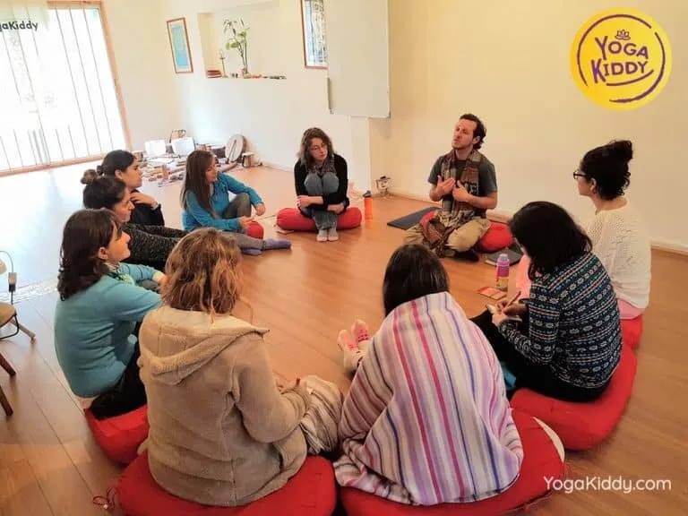
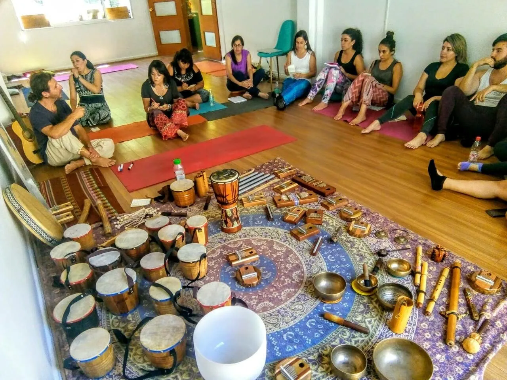
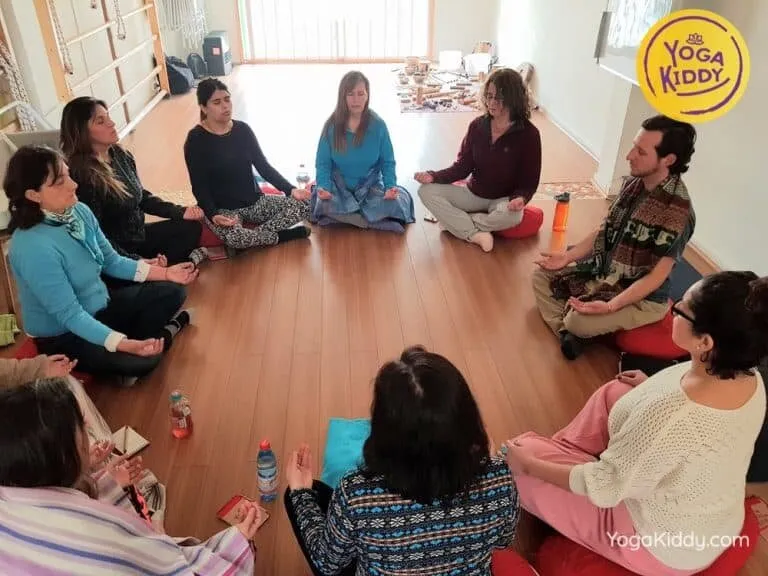
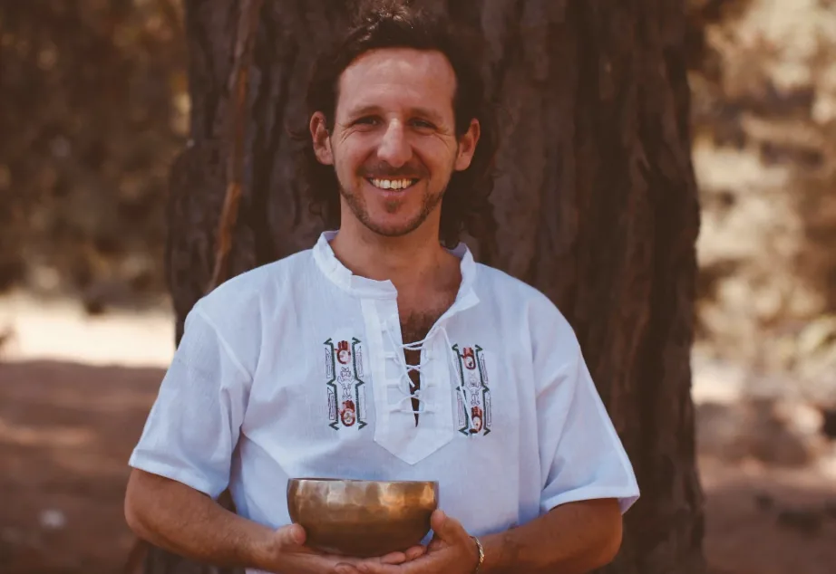

Sonoterapia Infantil en Línea
Próxima formación:
Sábados 06, 13 y 27 Junio 2026
El sonido tiene el poder de calmar, conectar y transformar. En esta formación aprenderás a llevar esa experiencia a la vida de los niños y niñas, utilizando el sonido como herramienta de bienestar, regulación y conexión. Son 12 horas de formación repartidas en 3 sábados en vivo.
No necesitas experiencia previa, solo motivación y apertura para aprender.

¿Qué es la Sonoterapia Infantil?
La Terapia de Sonidos o Sonoterapia trabaja con instrumentos musicales, la propia voz y la fuente vibracional de éstos, con objetivos de armonizar, equilibrar e impulsar bienestar en el ser humano.
Utiliza de forma educada y consciente la energía del sonido y distintas formas musicales simples direccionadas hacia fines específicos. La sonoterapia infantil adapta este ejercicio al trabajo con niños y niñas del primer y segundo septenio, entre los 3 y los 10 años.

¿Qué lograrás con esta capacitación?
- ✨Integrar el sonido como una herramienta concreta de bienestar en tu trabajo con niños.
- 🎧Guiar experiencias de sonoterapia infantil de forma segura, lúdica y consciente.
- 🎤Utilizar instrumentos, voz y dinámicas simples sin necesidad de formación musical previa.
- 🧠Favorecer la regulación emocional, la concentración y la conexión grupal.
- 💚Crear espacios de calma, escucha y presencia a través del sonido.
Una propuesta con sentido
Vivimos en un mundo donde los niños están constantemente estimulados, pero pocas veces realmente escuchan. La sonoterapia infantil nos invita a volver a lo esencial: el sonido como puente hacia el cuerpo, la emoción y la presencia.
Desde una mirada holística, comprendemos que el ser humano es una red interconectada de experiencias físicas, emocionales y mentales. El sonido, como vibración, tiene la capacidad de influir en todos estos niveles.
- 🌿Armonizar estados emocionales.
- 🌼Favorecer la regulación interna.
- 🎨Generar experiencias significativas en el aula, terapias o espacios familiares.

¿Qué aprenderás en esta formación?
Revisaremos el origen y evolución de la Sonoterapia a través de la historia y su utilización en la actualidad en diferentes contextos.
Estudiaremos el sonido, su aplicación en contextos terapéuticos y fundamentos respaldados por la investigación científica.
Aprenderás bases simples para reconocer escalas y afinación de los instrumentos musicales utilizados en Sonoterapia Infantil.
Trabajaremos con tambor, kalimbas, flautas, cuencos metálicos y accesorios, para comprender su uso en experiencias sonoras con infancia.
Explorarás dinámicas lúdicas para el abordaje sonoterapéutico grupal en niños de 4 a 9 años, con cantos simples acompañados de instrumentos musicales.
Profundizaremos en el desarrollo del niño y su evolución durante el primer y segundo septenio para adaptar la propuesta sonora con mayor sensibilidad.
¿Cómo se realiza esta formación?
- 💻Taller 100% online en vivo.
- 📹Plataforma: Zoom.
- ⏱Duración total: 12 horas repartidas en 3 sábados en vivo.
- 🎥Acceso a grabaciones durante 3 meses.
- 🎓Certificado de participación.
- 💪No necesitas experiencia previa.
- 💬Clases dinámicas, prácticas y participativas.
Misma formación, adaptada a tu país
Fechas para todos los países: 3 sábados en vivo: 06, 13 y 27 de Junio 2026
Chile
⏰ 10h a 12h y 14h a 16h
$120.000
Uruguay
⏰ 10h a 12h y 14h a 16h
$135 USD
España
⏰ 16h a 18h y 20h a 22h
115 euros
México
⏰ 8h a 10h y 12h a 14h
$2.320 MXN
¿Qué incluye?
- 📂Manual de apoyo digital: PDF a todo color.
- 🎧Asesoramiento: para la adquisición de instrumentos.
- 🎥Clases en vivo o diferido: con acceso a grabación por 3 meses.
- 💬Espacio de preguntas: y acompañamiento en directo.
- 🎓Certificado de participación: YogaKiddy Academy Internacional.
- ✨Formación actualizada: junto a un especialista en sonoterapia.
Esta formación es para ti si...
- 👶Trabajas con niños en educación, salud o bienestar.
- 🏫Eres docente, terapeuta o profesional del área infantil.
- 🏡Eres mamá, papá o cuidador y quieres herramientas para tu hogar.
- 🎶Te interesa el sonido, la música o el bienestar emocional.
- 💚Buscas nuevas formas de conectar con los niños desde lo sensible y lo lúdico.
No necesitas conocimientos previos, solo tu motivación y apertura.
Más que una formación
Formarás parte de una comunidad de personas que creen en una educación más consciente, respetuosa y humana.
Ya hemos acompañado a docentes y profesionales de distintos países a integrar herramientas de bienestar de forma simple, profunda y transformadora.
¿Quién te acompañará?

Sonoterapeuta y Formador
Matías Giménez Hutton
Sonoterapeuta, terapeuta holístico-transpersonal, formador y músico multi instrumentista con estudios en Argentina y Brasil. Terapeuta especializado en música, sonido y terapia.
En el área de la educación facilita talleres de sonoterapia para la primera infancia, impulsando programas de desarrollo humano y bienestar. Es estudiante de Pedagogía Waldorf, fundador de Grupo Manawa, Sonidos que Sanan, y director y docente de la escuela Maestros del Sonido desde 2018.
Información importante antes de inscribirte
No. Esta formación está diseñada tanto para principiantes como para profesionales que quieran profundizar.
Trabajamos principalmente con niños entre 3 y 10 años.
No es obligatorio. Puedes comenzar con elementos simples o incluso con tu voz.
Podrás guiar sesiones de sonoterapia infantil utilizando herramientas prácticas, creativas y pedagógicas.
Sí. Puedes acceder a las clases grabadas durante 3 meses.